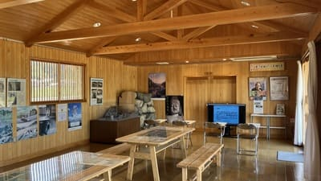
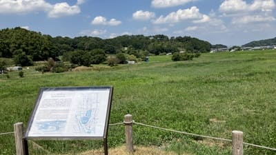
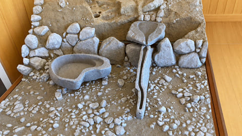

飛鳥京跡苑池休憩舎
映像やパネル展示、ジオラマなどで、飛鳥京跡苑池の発掘成果を紹介しています。館内にはトイレや休憩スペースもあります。

飛鳥京跡苑池（あすかきょうあとえんち）は、飛鳥宮に付属して造られた飛鳥時代の宮廷庭園跡です。南池と北池からなり、南池では中島や噴水に関わる石造物などが確認されています。後の日本庭園につながる重要な遺跡として、国の史跡・名勝に指定されています。発掘後に埋め戻されているため、現地の解説板にある復元図と周辺の地形を見比べながら、当時の姿を想像してみましょう。
| 営業時間 | 見学自由 |
|---|---|
| 定休日 | なし |
| 料金 | 無料 |
| 所要時間 | 約5～15分 |
| 駐車場 |
堂の前駐車場（徒歩約11分・普通車 500円） 万葉文化館駐車場（徒歩約8分・普通車 500円） 飛鳥寺前有料駐車場（徒歩約9分・普通車 500円） |
| アクセス | 近鉄飛鳥駅から徒歩約42分。 明日香周遊バス「岡橋本」下車、徒歩約8分。 |
| 地図 | 地図はこちら |

映像やパネル展示、ジオラマなどで、飛鳥京跡苑池の発掘成果を紹介しています。館内にはトイレや休憩スペースもあります。

南池では中島や、噴水のように水を動かす設備と考えられる石造物が見つかっています。水や石を用いた庭園の構造から、飛鳥時代の宮廷文化や、後の日本庭園につながる技術を知る手がかりになります。
飛鳥京跡苑池は、飛鳥宮に付属する庭園として造られたと考えられています。出土品や石材の分析から、斉明天皇の後飛鳥岡本宮の時期（656～667年）に造営され、その後、天武・持統天皇の飛鳥浄御原宮の時期（672～694年）にも使われ、改修されたとみられています。2003年に国の史跡・名勝に指定されました。2026年7月には「飛鳥・藤原の宮都」が世界遺産に登録され、飛鳥の歴史を伝える遺跡として注目されています。